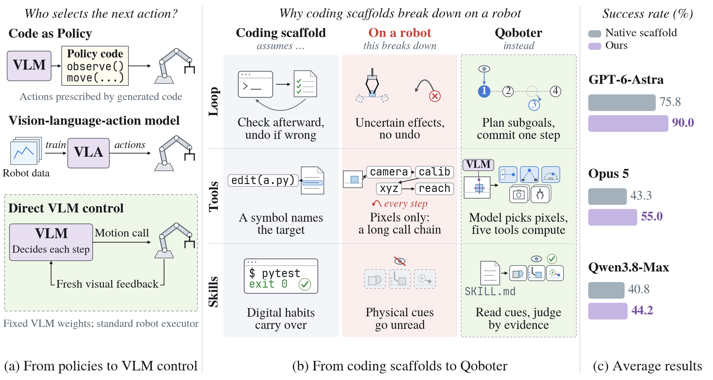
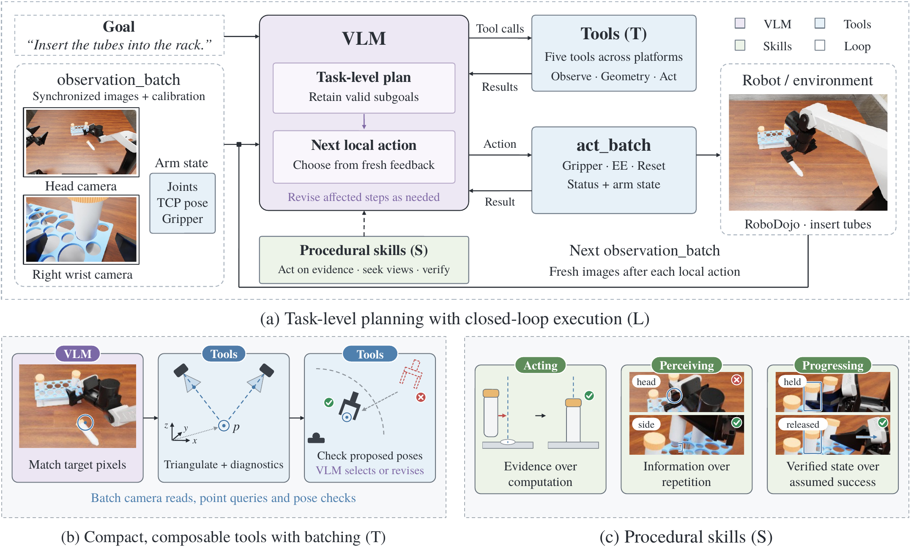

01 · The premise
General-purpose reasoning.
Robot-centric execution.
The challenge is not only to make the model stronger, but to build an interaction scaffold whose assumptions hold in the physical world.
In coding, what turned the nascent abilities of foundation models into reliable behavior was not only stronger models but also the scaffolding built around them. General-purpose vision-language models (VLMs) can now complete some robotic manipulation tasks zero-shot, which raises the question of whether existing coding scaffolds can serve manipulation directly. We find that they can complete some tasks on a robot but repeatedly expose problems, because their default assumptions at the loop, tool, and skill levels only partly hold in embodied settings. We therefore propose Qoboter, a robot-centric scaffold: its interaction loop binds every action to a fresh observation and makes retries after a failure rest on new evidence, up to a cap; its geometric tools lift 2D identifications to 3D targets and check reachability before execution; and its skills guide the model to trust observed evidence and verify each step. We evaluate on four simulators and a real robot with a success-cost frontier that jointly measures success, tokens, and interaction turns. Qoboter outperforms general-purpose scaffolds such as Codex and Claude Code, clearly raising success while token consumption stays comparable or falls slightly, and it transfers to models not used during development.

From policies to direct VLM control, then from general-purpose coding scaffolds to Qoboter. The robot-centric loop, tools, and skills improve success while keeping the model weights fixed.

Qoboter couples task-level planning with local actions chosen from fresh observations. Compact tools connect perception, geometry, and robot control, while procedural skills prioritize evidence, information gathering, and verified state.
02 · Evaluation breadth
Four simulators.
One real robot.
Ten tasks in each of four simulators and five on a real robot, across three embodiments. Each image shows the initial scene of its task.
- simulators
- 4
- real robot
- 1
- embodiments
- 3
- tasks
- 45
- ARX X5 Real robot, RoboDojo
- Aloha-AgileX RoboTwin
- Franka Panda RoboLab, LIBERO
Simulation instructions are quoted verbatim from the benchmarks. † Trailing execution hints omitted. Real-robot episodes share a single environment, so their task IDs are descriptive names.
Successful simulation rollouts · 39 tasks
Select an environment, then choose a task.
One successful zero-shot rollout is shown for each task with a successful episode in this run. Videos are compressed for the web; the original evaluation recordings are unchanged.
03 · Physical-world evaluation
From benchmark scenes.
To a dual-arm robot.
The five real-robot tasks probe what the simulators render poorly or not at all: placement with little margin, a soft object, contact-rich wiping, and an articulated drawer. The robot runs the same environment server interface as the simulators, so every scaffold reaches it exactly as it does in simulation.
-
Robot
Dual-arm ARX X5: two 6-DoF arms, each with a position-controlled parallel gripper, side by side in front of a tabletop.
-
Cameras
Three Intel RealSense D405: one fixed head camera looking down at the table and one on each wrist, all 640×480 RGB.
-
Safety
Every command passes workspace, inverse-kinematics, and inter-arm clearance checks before the arm moves. An operator holds the physical emergency stop throughout every episode.
-
Success
An on-site operator judges each episode against the task's pre-registered observable success condition. The agent's own claim that it has finished is never counted.
Matched comparison · 25 trials per scaffold
Same model setting. Better robot scaffold.
Evaluation with 6-astra at high reasoning effort. Each task is run five times; output tokens are averaged across episodes.
| Scaffold | Stack cylinder |
Doll to plate |
Cylinder to plate |
Wipe table |
Open drawer |
Overall | Avg. output tokens |
|---|---|---|---|---|---|---|---|
| QoboterOurs | 4/580% | 5/5100% | 5/5100% | 5/5100% | 3/560% | 22/2588% | 19.4k |
| Codex | 2/540% | 5/5100% | 4/580% | 3/560% | 1/520% | 15/2560% | 21.7k |
Successful rollouts · Task selector
Select a task to watch the robot execute it.
Each demonstration is a successful episode from the real-robot evaluation. Select a task below to switch the video.